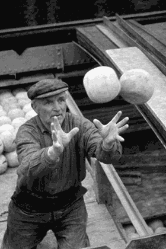

28 сентября 2006
Аналитический уголок Кубка Колотиловки (старуха Шапокляк) открывает новую рубрику - "Лучший игрок тура". В данной колодке каждую неделю мы будем публиковать интервью с лучшим игроком минувшего тура ворошиловки.
Во второй игровой день лучшим футболистом также был признан легионер из Дании - на этот раз под микроскоп попал защитник "FC Zivju Fileja" Янник Роcэ. Скандинав вышел здоровым из костоломной битве при "Арене-Бассейне" с участием хозяев и "Vot tak smrad", на 77-й минуте забив победный гол в матче (1:0). Этот удар практически наверняка гарантировал команде Росэ участие в четвертьфинале Кубка колотиловки и уверенное избежание соплей. 23-летний защитник был куплен всего три месяца назад за 68 тысяч латов, за "филейщиков" он сыграл уже 18 матчей, в одном из которых получил 3,5 звезды от эсеров. С датчанином побеседовал наш корреспондент Эркюль Ожешко.
Эркюль Ожешко: Янник, вы вышли сухим из воды и забили решающий мяч в дуэли с главным конкурентом по группе Щ. Кроме того, защитная линия "FC Zivju Fileja" сыграла практически идеально, не позволив сопернику создать у своих ворот практически ничего. Какие ощущения от поединка со "смрадниками"?
Янник Росэ: Наш тренер Дарко Оцоколич в этом матче решил экспериментировать в защите. Cо мной в центре обороны вместо Видускалнса играл Андиньш из дубля. Соответсвенно, поначалу боялся допустить ошибок и подставить несыгранного партнёра вместе с командой. Но за полтора тайма у нас наладились великолепные отношения и я даже позволил себе помогать в атаке на последних минутах игры.
Э.О.: Скажите, вас не удивил выбор вашего наставника сыграть по схеме 5-3-2, при этом стараясь, в основном, атаковать по флангам?
Я.Р.: У нас на носу важный матч в лиге против забивающей команды. Поэтому тренер решил поднять нам навык этой схемы, с которой в субботу мы будем играть на контратаках. А атаки по флангам - это из-за доверия нашим вингерам, которые в хоть и не забили, но неплохо проявили себя.
Э.О.: Что скажете о "Vot tak smrad"? Есть ли у этого клуба шансы соскочить с соплей, или "коричневые" обречены?
Я.Р.: Фиг знает. Особых подвигов от этой команды я не жду. Но даже если "smrad" займёт последнее место в нашей группе - они ещё могут реально соскочить с соплей. У них неплохая защита, которая всю игру (и даже после забитого мяча) сдерживала наши атаки.
Э.О.: Вы играете в "FC Zivju Fileja" уже три месяца. Какие впечатления от команды, все ли вас устраивает, не собираетесь сменить место работы?
Я.Р.: Меня пригласили в команду как ведущего защитника, и меня эта роль устраивает. Я верю в команду и уверен, что за несколько сезонов мы поднимемся двумя лигами выше - а это уже почёт и уважение. К тому же, у меня баба из Латвии. Изначально я думал, что "рыбные" - всего лишь очередное место работы. Но тут собрался неплохой и весёлый коллектив, в который у меня сразу получилось втянуться. Так что эти парни для меня потихоньку становятся семьёй. Команда молодая, и все мы хотим совершать подвиги.
Э.О.: В третьем туре Кубка колотиловки (старуха Шапокляк) ваш клуб играет с "FC Da Boyz". Будете ли участвовать в этом поединке? Может быть, дадите свой прогноз на матч?
Я.Р.: "Да Бойз", несмотря на понты, не очень сильная команда. Или, как минимум, безответственно подходит к матчам Кубка. Но чисто психологически - они первый тур вьебали, а второй выиграли слишком вяло - эта команда попытается размазать нас по бровке. Буду ли я участвовать? Это вы не меня спрашивайте. И прогнозы на матч - это вам тоже к гадалкам нужно обращаться. Всякое может быть.
Э.О.: Ну и последний вопрос. Янник, как вы думаете, какое место займет ваш клуб в Кубке колотиловки (старуха Шапокляк)?
Я.Р.: По-любому, мы выберемся в плейофф. Я не очень внимательно слежу за командами второй группы - когда придёт время, тогда и будем изучать соперника по четвертьфиналу. И по-любому будем играть только на победу.
Э.О.: Спасибо за беседу. Желаю вам пополнить бомбардирский счет в нашем турнире и не дать развернуться маститым хуяторам соперника.
Я.Р.: Farvel!

Ещё в середине прошлого века мужчины семьи Росэ могли контролировать мячи на поле.
(фотография из семейного архива)